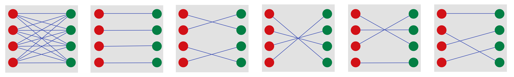
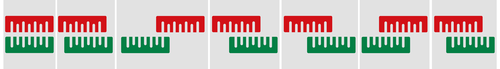
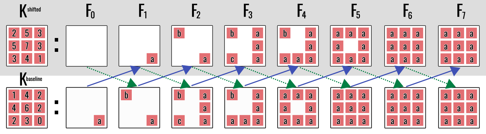
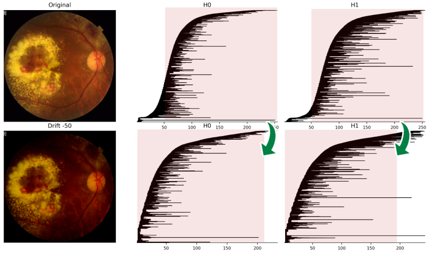
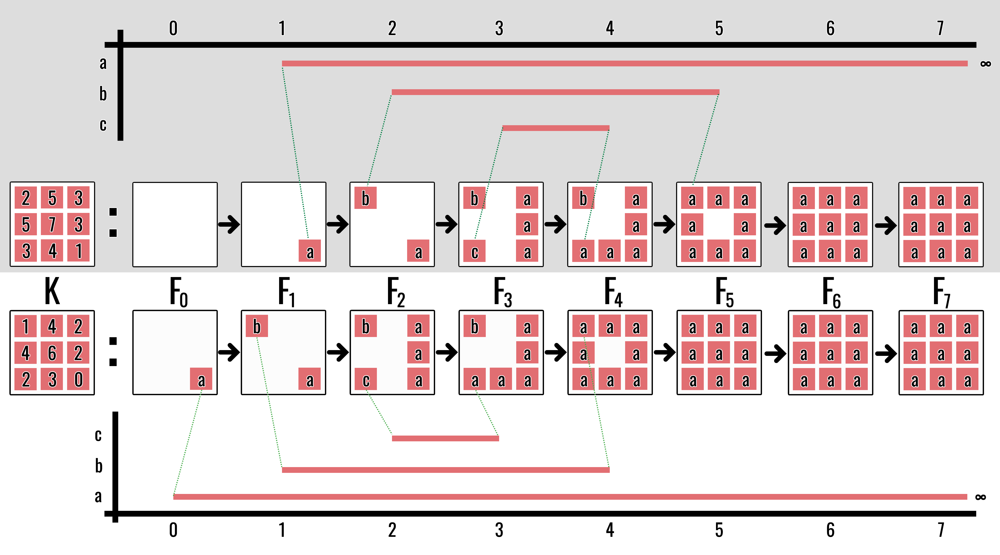

Stability of Persistent Homology
Small function changes produce small diagram changes
Persistent homology is useful only if small perturbations of the input do not produce arbitrarily large changes in the output. Stability makes that requirement precise (Cohen-Steiner et al. 2005; Lesnick 2015).
There are three objects and two output descriptions:
\[ \text{functions} \xrightarrow{\text{persistent homology}} \text{modules} \xrightarrow{\text{interval decomposition}} \text{diagrams}. \]
- \(\|f-g\|_\infty\) measures the largest input-value change.
- \(d_I\) measures how far two persistence modules must be shifted to map into one another.
- \(d_B\) measures the largest displacement required to match their diagram points.
The isometry theorem says \(d_I=d_B\). Shifted inclusions of sublevel sets then show that both are at most \(\|f-g\|_\infty\). The definitions below make these three sentences precise.
1 Matching persistence diagrams
Let \(\mathcal D\) and \(\mathcal D'\) be persistence diagrams. A matching pairs their points, allowing unmatched points to be paired with the diagonal
\[ \Delta=\{(x,x):x\in\mathbb R\}. \]
The distance from \((b,d)\) to the diagonal under \(d_\infty\) is
\[ \frac{d-b}{2}. \]
Thus, deleting a low-persistence feature is cheap, while deleting a long-persistence feature is expensive.
For example, the point \((2,8)\) has persistence \(6\) and lies distance \(3\) from the diagonal: its closest diagonal point is \((5,5)\). Matching it to the diagonal means treating the whole interval as absent in the other diagram, so the cost is half its lifespan.

2 Bottleneck distance
Definition 1 (Bottleneck distance) The bottleneck distance is
\[ d_B(\mathcal D,\mathcal D') = \inf_\gamma \sup_{x\in\mathcal D\cup\Delta} \lVert x-\gamma(x)\rVert_\infty, \]
where \(\gamma\) ranges over matchings between the diagrams augmented by the diagonal.
The objective is minimax: choose a matching that minimises the largest movement of any feature.
In plain language, try every admissible pairing, record the cost of its worst pair, and choose the pairing with the smallest such worst cost. The \(\sup\) selects the worst pair within one matching; the \(\inf\) selects the best matching. The diagonal is treated as having unlimited copies so several short features may independently be matched away.
3 Interleavings
Persistence modules require an algebraic distance. A shift by \(\varepsilon\geq0\) moves a module forward:
\[ (V[\varepsilon])_t=V_{t+\varepsilon}. \]
An interleaving compares two evolving objects whose clocks may be slightly out of synchronisation. If every event in \(V\) can be represented in \(W\) after waiting at most \(\varepsilon\), and conversely, then the modules are \(\varepsilon\)-interleaved. The round-trip requirement prevents arbitrary maps from erasing information: going across and back must equal ordinary evolution for \(2\varepsilon\) units of time.

Definition 2 (Interleaving) Two modules \(V\) and \(W\) are \(\varepsilon\)-interleaved when there are compatible maps
\[ V\to W[\varepsilon], \qquad W\to V[\varepsilon] \]
whose round trips agree with the internal shifts by \(2\varepsilon\).
The interleaving distance \(d_I(V,W)\) is the infimum over all such \(\varepsilon\).
For a digital image, the natural index range is finite. A shift could move beyond the largest intensity value, so we constantly extend a filtration: after its final index, it remains equal to its terminal complex forever. The associated persistence module is extended by identity maps. This convention makes every forward shift well-defined without changing any finite birth or death.
In the discrete case, a \(k\)-interleaving consists of maps
\[ \phi_t\colon V_t\to W_{t+k}, \qquad \psi_t\colon W_t\to V_{t+k} \]
satisfying two kinds of conditions. The parallelogram relations
\[ b_{t+k}\phi_t=\phi_{t+1}a_t, \qquad a_{t+k}\psi_t=\psi_{t+1}b_t \]
say that the cross-module maps respect evolution through time. The triangle relations
\[ \psi_{t+k}\phi_t=a_{t\to t+2k}, \qquad \phi_{t+k}\psi_t=b_{t\to t+2k} \]
say that a round trip through the other module is exactly the same as waiting \(2k\) steps inside the original module.
The triangle relations are the essential conservation law. A long-lived class cannot be sent to a short-lived noise feature: if it vanished during the round trip, the composite would be zero even though the internal \(2k\)-shift map is nonzero.
In the square, the two routes compare “advance one step, then cross” with “cross, then advance one step.” In the triangle, the diagonal two-stage route through the other module must equal the direct horizontal evolution within the original module.

The next two results explain exactly why a zero interleaving means identical barcode information and how ranks count intervals. They are useful for a complete algebraic picture, but the main stability argument can be followed by proceeding directly to the isometry theorem.
Corollary 1 (Zero interleaving and equality of barcodes) For finite interval-decomposable persistence modules \(V\) and \(W\), the following are equivalent:
- \(V\) and \(W\) are \(0\)-interleaved;
- \(V\) and \(W\) are isomorphic as persistence modules;
- \(V\) and \(W\) have the same barcode; and
- their rank invariants agree: \(\operatorname{rank}(V_i\to V_j)=\operatorname{rank}(W_i\to W_j)\) for all \(i\leq j\).
Proof. For \(k=0\), the triangle relations say that \(\psi_t\phi_t\) and \(\phi_t\psi_t\) are identity maps, so the interleaving maps are componentwise inverse module isomorphisms. Isomorphic modules have the same interval decomposition by uniqueness.
For an interval decomposition, the rank of \(V_i\to V_j\) is the number of intervals containing the whole index range \([i,j]\). Thus the barcode determines the rank invariant. Conversely, interval multiplicities can be recovered from the rank invariant by finite differences, so equal rank invariants give the same barcode. Finally, a shared interval decomposition gives a module isomorphism and hence a zero interleaving.
Lemma 1 (Fundamental lemma of persistent homology) For \(i\leq j\), the persistent Betti number is
\[ \beta_{i\to j} = \#\{[b,d)\in\operatorname{Bar}(V):b\leq i\leq j<d\}. \]
Proof. Decompose \(V\) into interval modules. The map \(I^{[b,d)}_i\to I^{[b,d)}_j\) has rank one precisely when both indices lie in the interval, equivalently \(b\leq i\leq j<d\); otherwise it has rank zero. Ranks add over direct sums, so the rank of \(V_i\to V_j\) counts exactly those intervals.
Theorem 1 (Isometry theorem) For pointwise finite-dimensional one-parameter persistence modules,
\[ d_I(V,W)=d_B(\operatorname{Dgm}V,\operatorname{Dgm}W). \]
The algebraic and geometric comparisons describe the same amount of displacement.
By the structure theorem, decompose both modules into interval modules. Two interval modules are \(\varepsilon\)-interleaved precisely when their endpoint pairs are within \(\varepsilon\) in the \(\ell_\infty\) metric, with a short interval allowed to match the diagonal. Direct sums of such interval interleavings correspond exactly to diagram matchings. Minimising the largest interval cost on either side therefore gives the same value. The full theorem for the standard class of persistence modules is due to the algebraic stability/isometry theory (Cohen-Steiner et al. 2005; Lesnick 2015).
4 The stability theorem
The word tame below is a finiteness condition ensuring that the persistence diagram is well behaved. For the finite cubical filtrations of digital images, this condition is automatic. Both functions must be defined on the same domain so that \(|f(x)-g(x)|\) can be compared point by point.
Theorem 2 (Stability of sublevel-set persistence) Let \(f,g\colon X\to\mathbb R\) be tame functions on the same domain. For each homological dimension \(k\),
\[ \boxed{ d_B\bigl(\operatorname{Dgm}_k(f), \operatorname{Dgm}_k(g)\bigr) \leq \lVert f-g\rVert_\infty } \]
This is the central stability theorem for sublevel-set persistent homology.
If every function value changes by at most \(\varepsilon\), no persistence feature needs to move by more than \(\varepsilon\) in bottleneck distance.
The proof has one geometric step and one algebraic step. The pointwise inequality produces shifted inclusions of sublevel sets; functoriality turns those inclusions into an interleaving. No direct matching of individual holes is required.
Proof. Put \(\varepsilon=\lVert f-g\rVert_\infty\). Then
\[ \lVert f-g\rVert_\infty\leq\varepsilon. \]
Then for every \(x\),
\[ f(x)\leq t \quad\Longrightarrow\quad g(x)\leq t+\varepsilon. \]
Therefore,
\[ X_t(f)\subseteq X_{t+\varepsilon}(g). \]
By symmetry,
\[ X_t(g)\subseteq X_{t+\varepsilon}(f). \]
These shifted inclusions induce an \(\varepsilon\)-interleaving of the persistence modules. The isometry theorem converts that interleaving into the bottleneck bound.
5 Uniform intensity shifts
First consider an (R)-indexed filtration with no clipping at a fixed intensity boundary. If \(g=f+c\), then every birth and death shifts by \(c\):
\[ (b,d)\longmapsto(b+c,d+c). \]
Persistence lengths remain unchanged:
\[ (d+c)-(b+c)=d-b. \]
This is why some persistence summaries are insensitive to a uniform change in brightness even though the diagram moves.
An actual 8-bit image adds a boundary effect. Values are constrained to ([0,255]), so applying a shift and clipping can destroy the exact translation relation near (0) or (255). The following retinal example shows both behaviours: most endpoints move coherently, while features meeting the boundary can be truncated.

A toy filtration makes the translation mechanism visible cell by cell. Adding one to every intensity delays the appearance of every cell by one filtration step. The shapes and interval lengths agree after that index shift; only their positions on the filtration axis change.

6 Stable summaries
Machine-learning models require vectors rather than multisets of diagram points. A vectorisation
\[ \Phi:(\mathcal D,d_B)\to(\mathbb R^m,\lVert\cdot\rVert) \]
should itself be Lipschitz:
\[ \lVert\Phi(\mathcal D)-\Phi(\mathcal D')\rVert \leq L_\Phi d_B(\mathcal D,\mathcal D'). \]
Otherwise, an unstable post-processing step can destroy the guarantee supplied by persistent homology.
This is an important change of codomain. Stability of the diagram does not automatically imply stability of every statistic computed from it. The map \(\Phi\) must be analysed just as the persistent-homology map was analysed.
Proposition 1 (Stability of the top-\(k\) persistence sum) If \(S_k(\mathcal D)\) is the sum of the \(k\) largest finite persistences, then
\[ |S_k(\mathcal D)-S_k(\mathcal D')| \leq 2k\,d_B(\mathcal D,\mathcal D'). \]
Each matched interval changes length by at most twice the bottleneck movement.
Proof. Let \(\delta>d_B(\mathcal D,\mathcal D')\) and choose a matching of cost at most \(\delta\). If \((b,d)\) is matched to \((b',d')\), then
\[ |(d-b)-(d'-b')| \leq |d-d'|+|b-b'| \leq2\delta. \]
Matching to the diagonal obeys the same inequality because its cost is half the persistence. Take the \(k\) intervals contributing to \(S_k(\mathcal D)\) and follow their matches in \(\mathcal D'\), treating a diagonal match as persistence zero. Their matched total is at most \(S_k(\mathcal D')\), because \(S_k(\mathcal D')\) is the largest sum obtainable from \(k\) persistences in \(\mathcal D'\). Hence
\[ S_k(\mathcal D) \leq S_k(\mathcal D')+2k\delta. \]
Interchanging the two diagrams gives the reverse inequality. Therefore \(|S_k(\mathcal D)-S_k(\mathcal D')|\leq2k\delta\). Letting \(\delta\downarrow d_B(\mathcal D,\mathcal D')\) proves the claim.
7 The theorem’s limitation
Stability is only as meaningful as the input distance. On an ideal continuous domain, a small geometric motion may be harmless. On a sampled pixel grid, rotation or rescaling requires interpolation and can create a large \(\lVert f-g\rVert_\infty\) error.
The theorem has not failed. Rather, the acquisition pipeline has turned a small physical movement into a large change of the discrete intensity function. The next chapter analyses this gap.
7.1 When a true theorem gives a vacuous bound
Suppose an 8-bit image has a dark vessel with intensity near \(0\) against a background near \(255\). Moving the image by one pixel can compare a vessel pixel in the original with a background pixel in the resampled image. Then
\[ \|f-g\|_\infty\approx255. \]
But no finite feature in an 8-bit filtration can have persistence greater than the dynamic range. The stability conclusion \(d_B\leq255\) therefore excludes almost nothing: the bound is mathematically correct but operationally uninformative.
This distinction is central to the thesis. Algebraic stability controls changes in function values on a common domain. It does not say that a small physical camera motion produces a small supremum-norm change after sampling. The next chapter opens that black box by decomposing acquisition into spatial and radiometric mechanisms.
The practical stability chain is
\[ \text{small sup-norm input change} \Longrightarrow \text{small interleaving} \Longrightarrow \text{small bottleneck distance}. \]
It is a one-sided guarantee: the output cannot move more than the bound, but it may move much less. A large bound does not prove instability; it says only that the theorem has become uninformative. The next chapter investigates when sampling and acquisition make that happen.
8 Exercises
- Compute the distance from \((2,8)\) to the diagonal.
- If \(\lVert f-g\rVert_\infty\leq3\), what bottleneck bound follows?
- Show the two sublevel-set inclusions used in the proof.
- Explain why adding a constant preserves persistence lengths.
- Why must a diagram vectorisation be checked for stability separately?
Previous: Persistent Homology · Course contents · Next: Computational Stability